Group exhibition
Welt am Draht

Wherever I Lay My Head Is Home.
On the occasion of Timóteo's invitation to take part in this group exhibition, which I naturally accepted, and beyond being an honour, I also took it as a challenge to my usual modus operandi.
Part of the mental exercise I set myself was to create a work that acts as a kind of subtle intervention: not wanting to impose myself, but rather to adapt and elevate the collective spirit, and in doing so force myself to think differently.
Inspired by the images I saw of Timóteo's work 'O Chão na Cabeça', I remembered a book written by the priest Fernando Augusto da Silva, the Elucidário Madeirense, from the early twentieth century. In it there is a famous passage describing the discovery of the island of Madeira: by order of the King of Portugal, the sailors had to clear the island for the planting of sugar cane.
Faced with such a task, the successive destruction of the island's natural life began, which had survived since the time of the dinosaurs. Large trees, trunks as wide as houses, were systematically cut down with axes, but all this effort would be in vain. Imagine tiny men sweating, axe blow after axe blow; felling a single tree took days, even weeks, until, in total despair, it was decided to set fire to the dense, ancient forest.
Legend has it that the island of Madeira burned for seven years. I imagine that is an exaggeration, but there is a part of me that believes it might have been possible, knowing well the character of the Madeirans, being myself a descendant of that wild island.
During my research I found one of these legendary trees, most likely a great-great-grandchild of its gigantic ancestors: a black-and-white photograph of a chestnut tree that appears to have a door, with men standing and posing for the photo.
It was not in fact a house, but a shop, where they probably sold aguardente and dry wine to tourists, mostly northern European nobility, who spoke so much of the airs of Madeira for curing lung diseases.
While ruminating on the vision of a tavern inside a giant tree, driving on the autobahn in Germany, I heard Metallica's 'Wherever I May Roam' on the radio and kept the line: wherever I lay my head is home.
The song is universal, where 'home' is not a physical place but rather a state of mind.
Here I am, a descendant of the wild islanders, living in the territories of the old European nobility. The roles have reversed: the massive destruction of nature, and not only nature, driven by imperialist and capitalist interest, pushes the living to search for new territories; memory fades and even seems a lie, coming back to life only for those who go looking for it.
Roger Paulino, 2026, Leipzig.
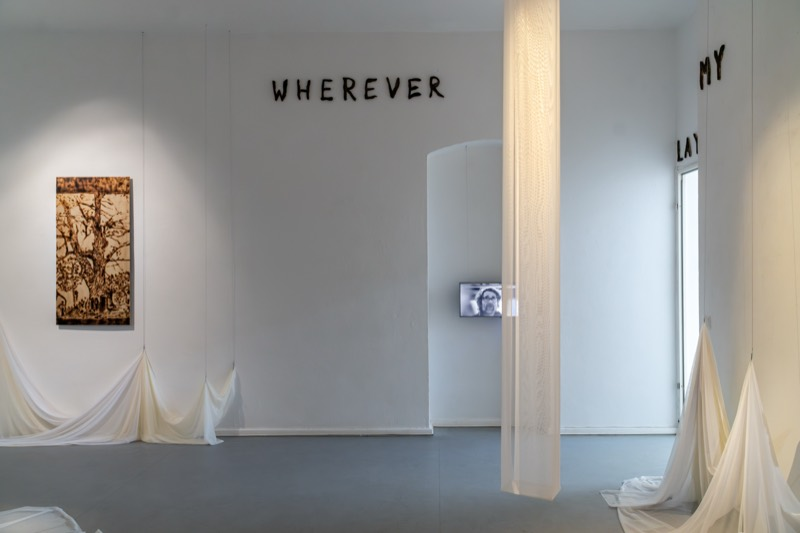
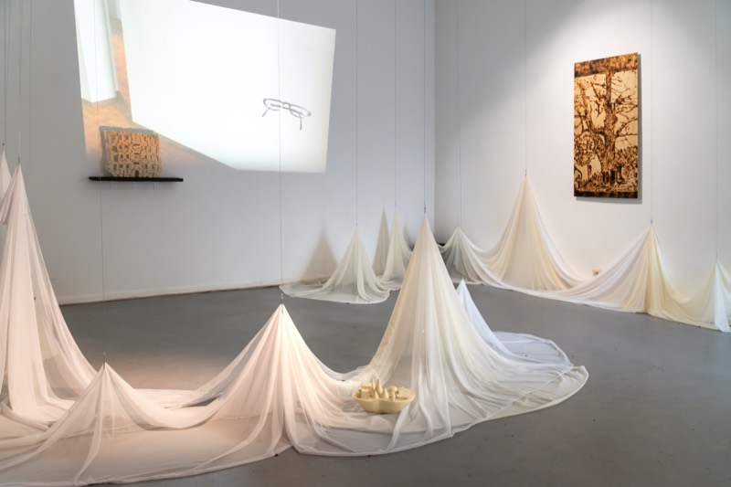
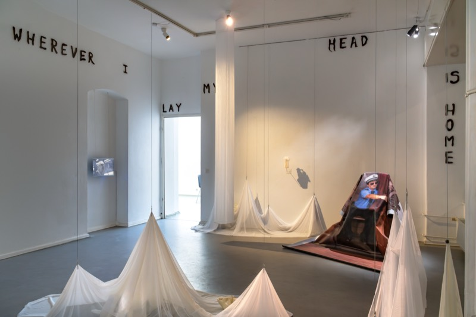
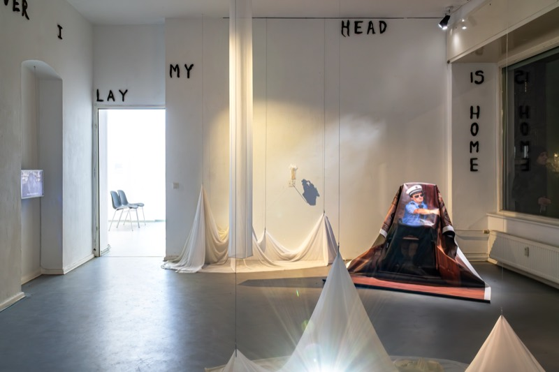
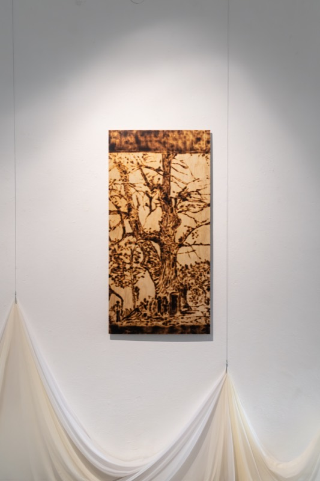
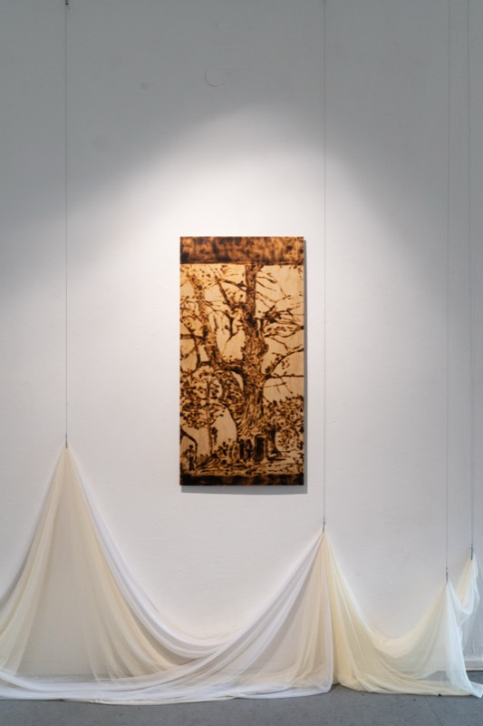
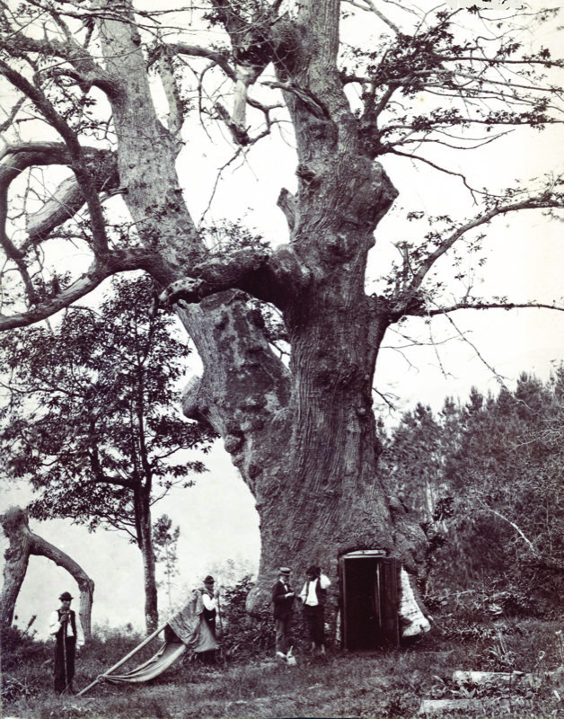
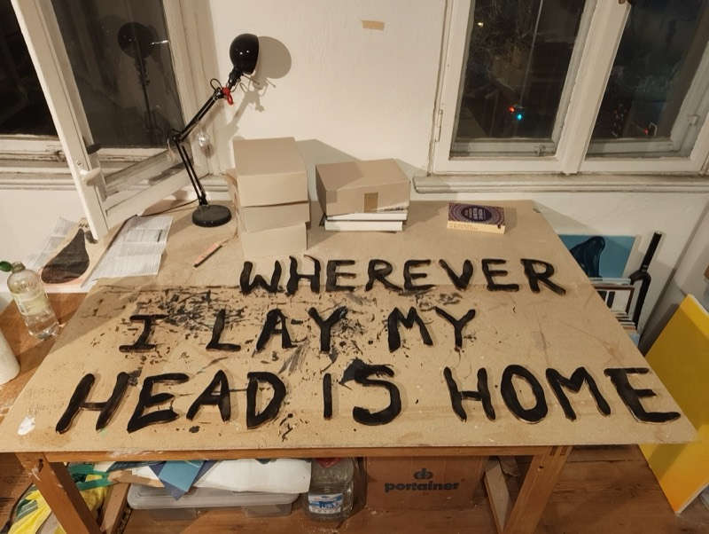
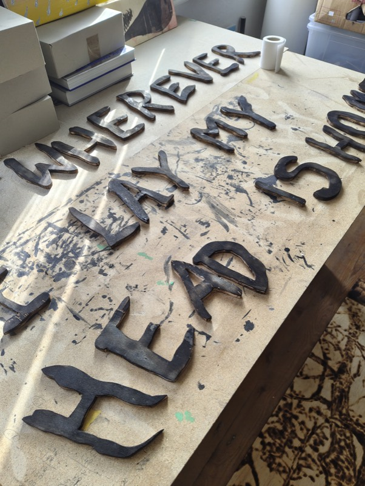
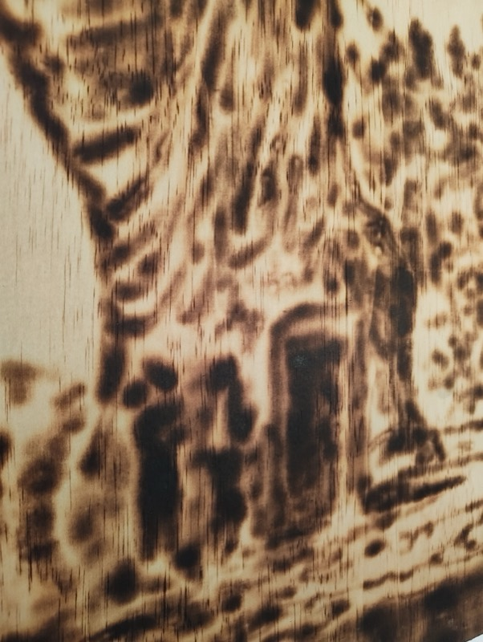
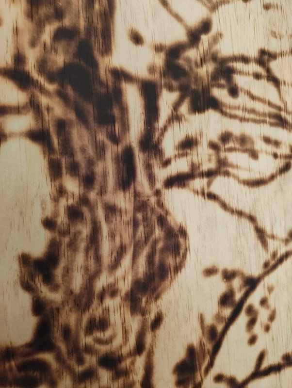
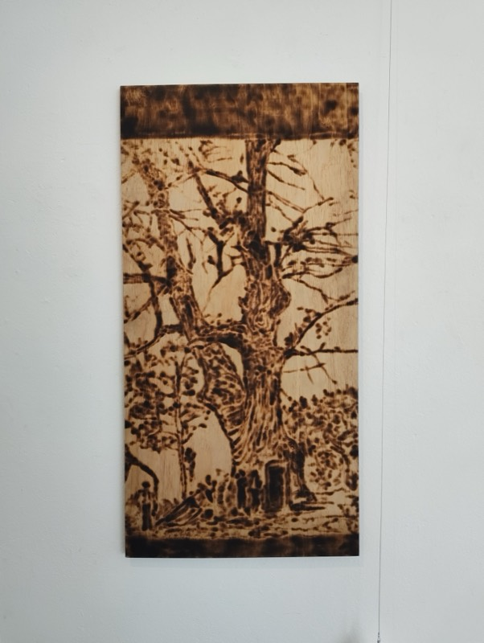
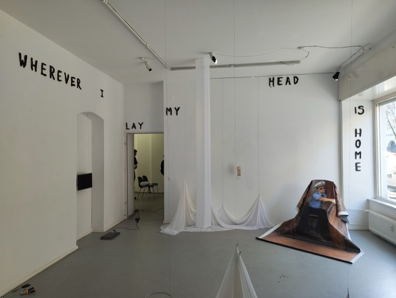